السلسلة 108
السيارة (صنف B) · 25 سؤال بالصوت. حاول تجاوب بوحدك، من بعد شوف الجواب.
السؤال 1
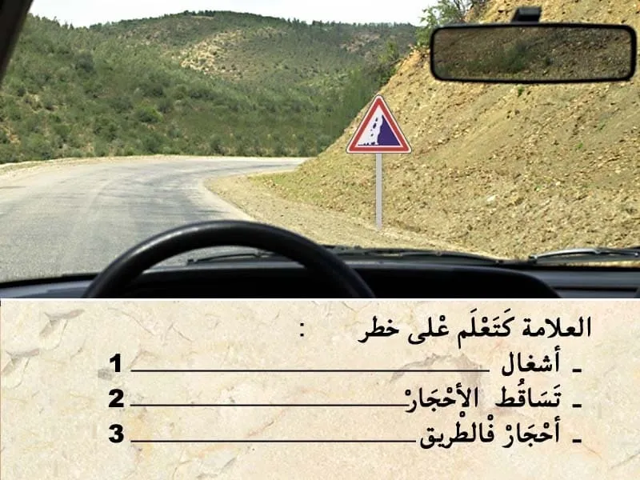
بيّن الجواب
الجواب الصحيح: 2 و 3
هذا العلامة ديال الخطر.
-كتعلم على خطر تساقط الأحجار من جوانب الطريق . يمكن لي نلقى احجار على الطريق .
- الخطر خارج التجمع السكني كيكون على بعد 150 متر .
يعني الجواب الصحيح هو 2 و 3.
السؤال 2
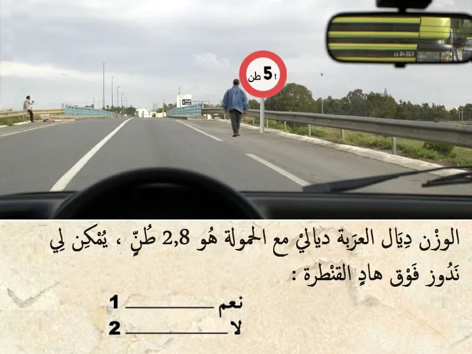
بيّن الجواب
الجواب الصحيح: 1
هذا العلامة ديال المنع.
💥 كتعلم بلي المرور ممنوع جميع العربات لي كيتجاوز مجموع الوزن مع الحمولة ديال ها 5 طن .
✅ الوزن ديال العربة ديالي هو 2.8 طن . يعني يمكن لي نكمل السير.
السؤال 3
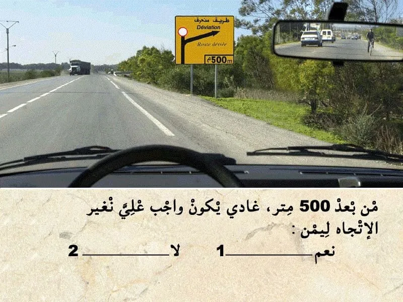
بيّن الجواب
الجواب الصحيح: 1
هذا العلامة ديال الإرشاد. باللون الأصفر. "تشوير مؤقت"
- كتعلم على طريق منحرف على بعد 500 متر .
حيت عندي علامة ⭕ كيعني ممنوع عليا نكمل السير للقدام و واجب عليا نغير الإتجاه على ليمن .
السؤال 4
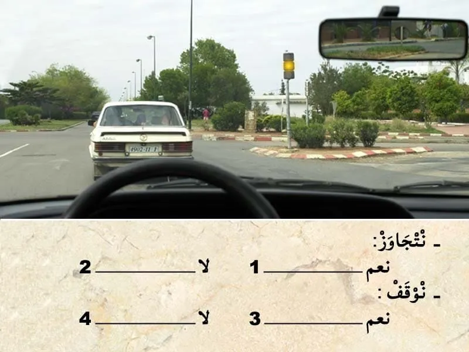
بيّن الجواب
الجواب الصحيح: 2 و 3
في هذا كاين ضوء ثلاثي الألوان .
الضوء الأصفر شاعل و بالتالي واجب عليا نوقف .حيت غادي يشعل الضوء الاحمر مباشرة .
السؤال 5

بيّن الجواب
الجواب الصحيح: 2 و 3
هذا العلامة ديال المنع كتمنع التوقف بعد العلامة .
و تحت منها علامة تكميلية فيها سهم للأسفل يعني أن التوقف ممنوع قبل العلامة.
و بعد العلامة يمكن لي نتوقف.
السؤال 6
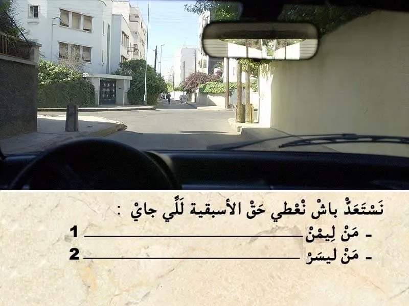
بيّن الجواب
الجواب الصحيح: 1
فهذا ملتقى الطرق بغياب التشوير الطرقي . الأسبقية للي جاي من جهت ليمن .
فهذا الحالة واجب عليا نعطي حق الأسبقية للي جاي من جهت ليمن..
السؤال 7
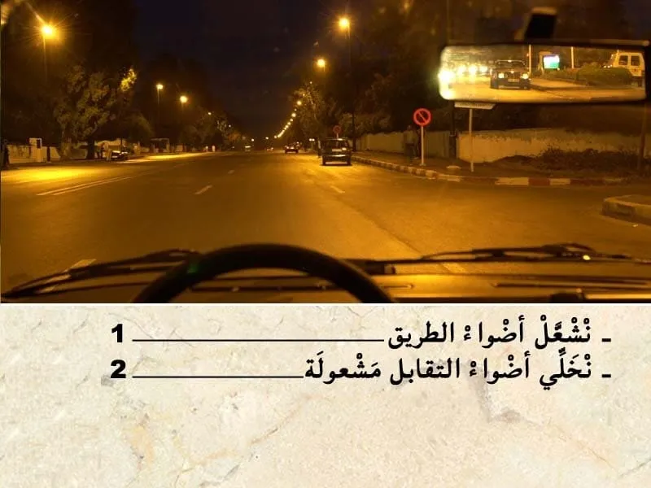
بيّن الجواب
الجواب الصحيح: 2
في هَذَا الحَالَة انا كنسير داخل التجمع السكني و بالتالي ممنوع عليا نستعمل أَضْوَاء الطريق .
السؤال 8

بيّن الجواب
الجواب الصحيح: 1 و 2 و 4
لفحص حالة العجالات من الواجب نراقب الضغط الهوائي و جوانب الإطار المطاطي و مستوى التأكل.
السؤال 9
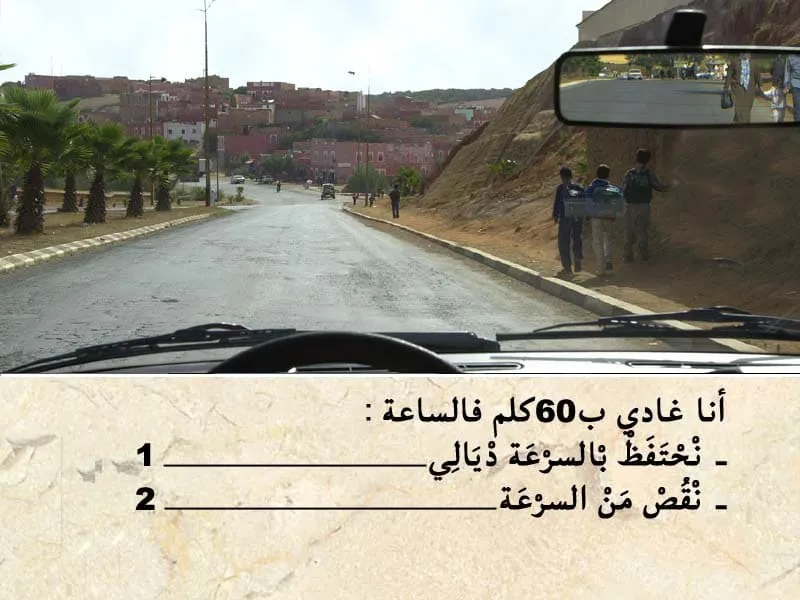
بيّن الجواب
الجواب الصحيح: 2
في هذا الحالة كاينين هذا الأطفال على جنب الطريق .
السلوك ديال الاطفال في غالب الأحيان كيكون غير متوقع و بالتالي من الواجب عليا تنقص من السرعة
السؤال 10
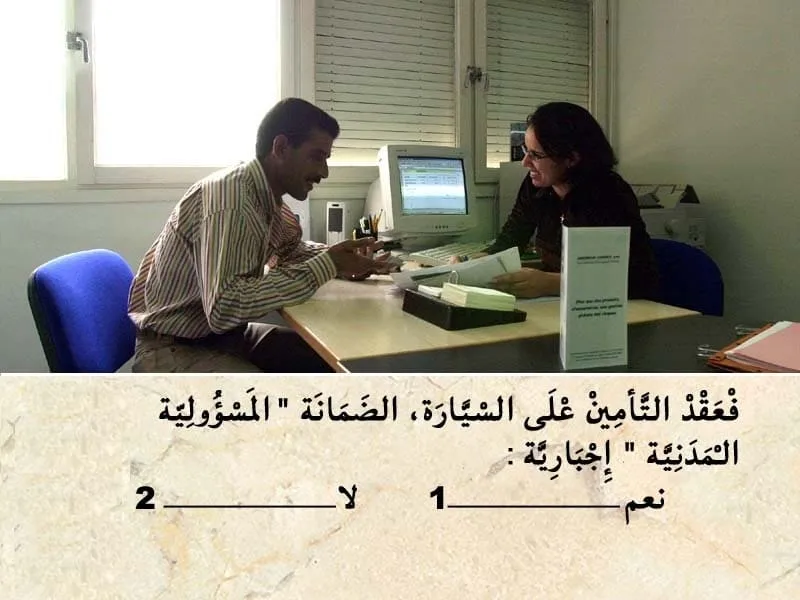
بيّن الجواب
الجواب الصحيح: 1
تأمين المسؤولية المدنية "الطرف الثالث" ꓽ
✔ يعتبر تأمين الطرف الثالث أبسط صيغة للتأمين وأقلها تكلفة مالية.
✔ يتعين على جميع مالكي المركبات بموجب القانون تحمل تأمين المسؤولية المدنية "طرف ثالث" على الأقل لحماية مستعملي الطريق الآخرين.
✔ يغطي تأمين مسؤولية المركبات تكاليف الأضرار المادية والإصابات الجسدية التي تلحق بطرف ثالث والتي قد يكون السائق مسؤولاً عنها.
السؤال 11
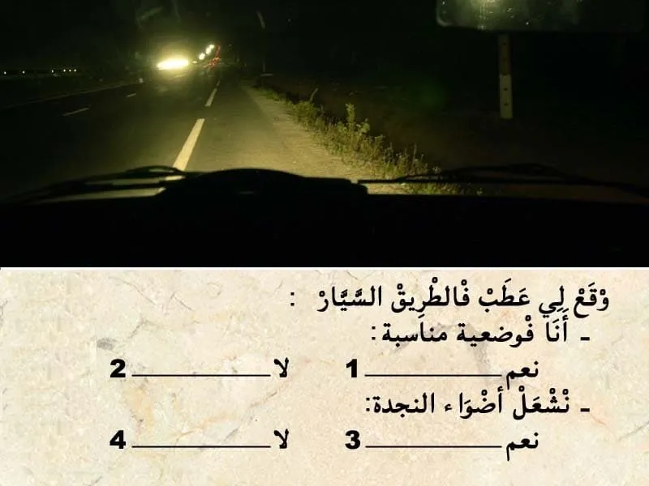
بيّن الجواب
الجواب الصحيح: 1 و 3
في الطريق السيار كيكون مسلك خاص بالتوقف الاستعجالي او في حالة عطب .
في حالة العطب كنتوقف فيه.
✅ في هذا الحالة وقع ليا عطب ،يعني انا في الوضعية المناسبة.
✅ واجب عليا نشغل أضواء النجدة. باش نكون واضح و مرئي للآخرين.
السؤال 12
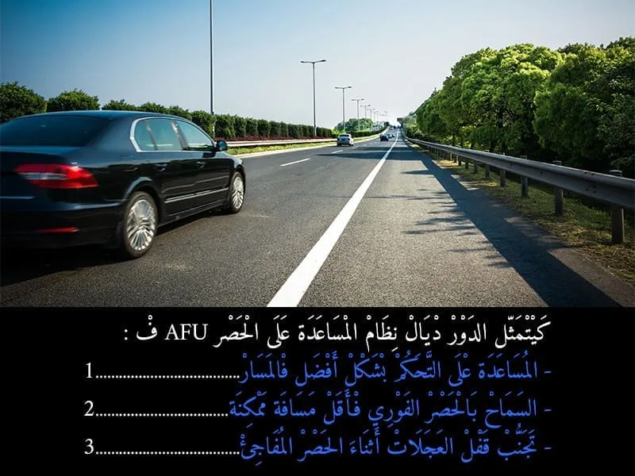
بيّن الجواب
الجواب الصحيح: 2
مساعدة الفرامل في حالات الطوارئ ( AFU )
- كيسمح بالخصر الفوري فأقل مسافة ممكنة .
السؤال 13

بيّن الجواب
الجواب الصحيح: 1 و 3
في حالة سياقة مركبة بلا صفائح التسجيل كتعتبر مخالفة و كتعرض السائق لغرامة مالية كتراوح ما بين:
- 2000 حتى ل 12000 درهم
و في هذا الحالة المركبة كيتم اداعها في المحجز . لعدم التوفر على رقم التسجيل .
السؤال 14
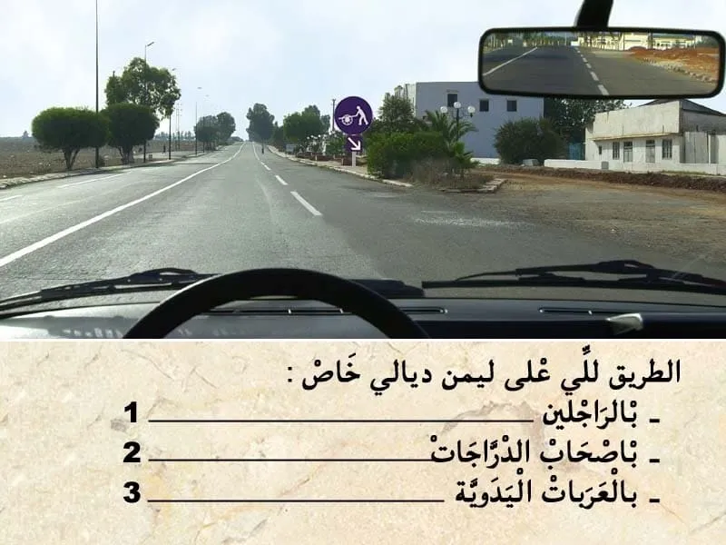
بيّن الجواب
الجواب الصحيح: 3
هذا العلامة ديال الاجبار.
كتعلم بلي المسلك لي في اقصى اليمين هو مسلك إجباري لاصحاب العربات المدفوعة بواسطة حيوانات.
الإجابة الصحيحة هي 3.
السؤال 15

بيّن الجواب
الجواب الصحيح: 1
قبل التجاوز . واجب عليا نراقب، تم نبه، تم ننحاز.
في هذا الحالة الطريق خاوية وراية ما كاينش حتى شي حد جاي وراية و اعلم بلي غادي يتجاوز .
- الطريق قبالتي خاوية " طريق عندو إتجاه وحيد " و بالتالي يمكن لي نتجاوز.
السؤال 16
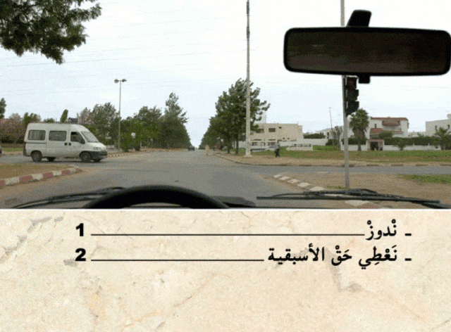
بيّن الجواب
الجواب الصحيح: 1
في هذا الحالة الضوء الأصفر رفراف يعني الغاء إشارة الضوء ثلاثي الألوان و بالتالي الأسبقية لمول ليمن . لي ليمن ديالوا خاوي يدوز .
ندوز انا الأول .
السؤال 17

بيّن الجواب
الجواب الصحيح: 1 و 3
هذا العلامة ديال الإرشاد.
كتضم كتابة يعني اسم الوجهة "التجمع السكني " . عدم وجود ارقام لي كتعلم على المسافة لي مزال ليا باش نوصل . كيعني انني غادي ندخل لتجمع سكني.
- داخل التجمع السكني السرعة كتصبح محدودة في 60 كلم في الساعة.
السؤال 18
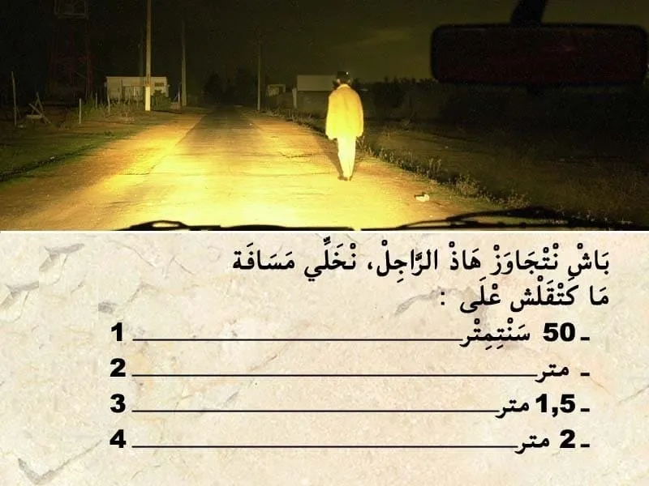
بيّن الجواب
الجواب الصحيح: 2
المسافة الجانبية لي من الواجب عليا نخلي بيني و الراجلين.
ما خاصهاش تكون اقل من 1 متر .خارج و داخل التجمع السكني.
السؤال 19
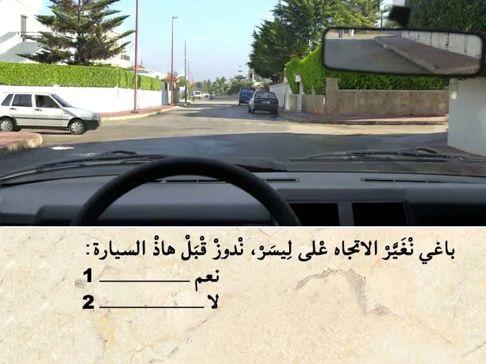
بيّن الجواب
الجواب الصحيح: 1
في غياب التشوير الطرقي .
في ملتقى الطرق كروازمة حق الأسبقية للي جاي من ليمن . للي ليمن ديالوا خاوي يدوز هو الأول.
و بالتالي واجب على السيارة تسمح ليا ندوز انا الاول.
السؤال 20
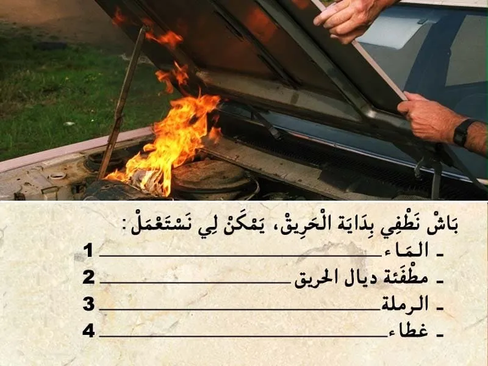
بيّن الجواب
الجواب الصحيح: 2 و 3 و 4
باش نطفي بداية الحريق . يمكن لي نستعمل :
- مطفئة ديال الحريق .
- الرملة .
- غطاء .
السؤال 21
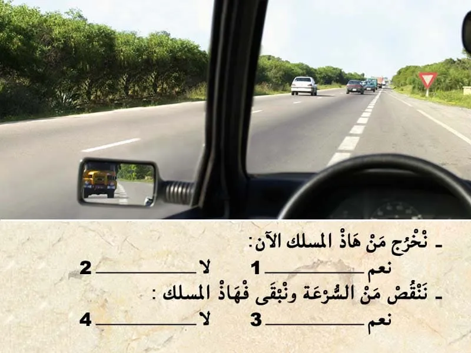
بيّن الجواب
الجواب الصحيح: 2 و 3
في هذا الطريق السيار انا كنسير فمسلك الاندماج و بالتالي واجب عليا نعطي حق الأسبقية للي جاي من ليسر. و نبقى غادي فهاذ المسلك.
السؤال 22
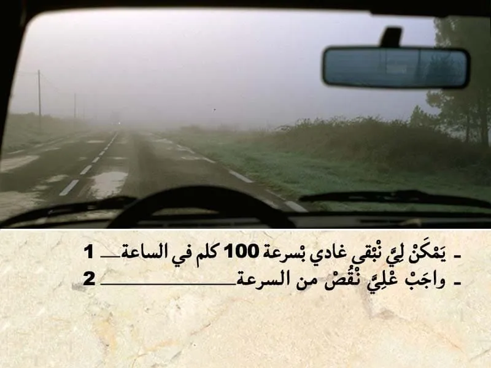
بيّن الجواب
الجواب الصحيح: 2
في المنعرج من الواجب ننقص من السرعة . حيت كيشكل خطر و ممكن يصعاب على السائق يدور بسهولة.
السؤال 23
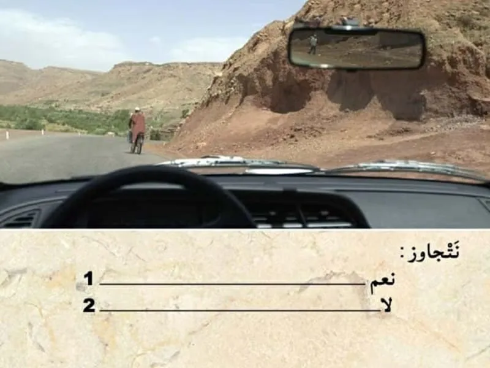
بيّن الجواب
الجواب الصحيح: 2
قبل التجاوز . واجب عليا نراقب، تم نبه، تم ننحاز.
في هذا الحالة كاين منعرج و قدامي راكب الدراجة.
- الرؤية قبالتي غير واضحة و بالتالي ما يمكنش لي نتجاوز.
السؤال 24
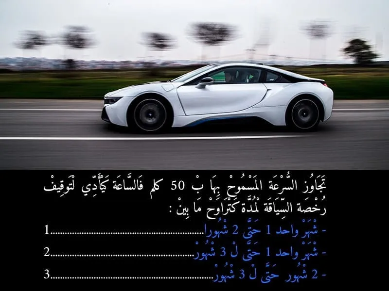
بيّن الجواب
الجواب الصحيح: 2
تجاوز السرعة ب 50 كلم في الساعة كتعتبر جنحة و كتعرض السائق لغرامة مالية من 4000 حتى ل 8000 درهم .
-و كتعرض السائق لسحب 6 نقاط من رصيد رخصة السياقة .
- و بتوقيف رخصة السياقة لمدة تتراوح ما بين شهر واحد حتى ل 3 اشهر.
السؤال 25
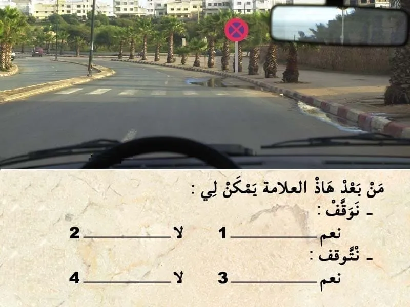
بيّن الجواب
الجواب الصحيح: 2 و 4
هذا العلامة كتمنع الوقوف و التوقف.
من بعد العلامة غادي يصبح الوقوف و التوقف ممنوع.